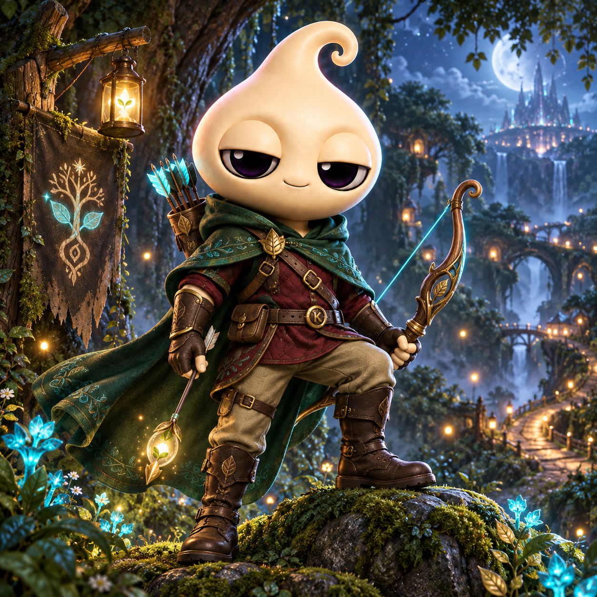
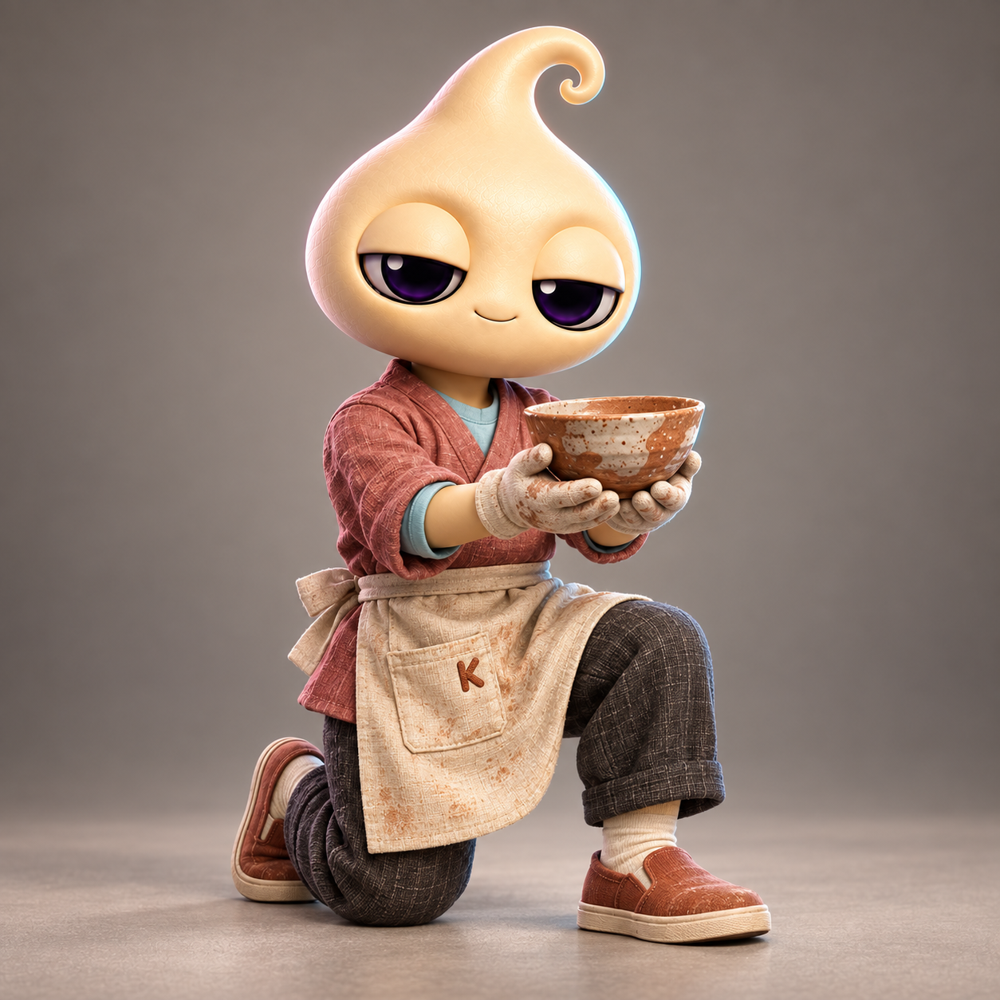

Earthbound Traveler
One of 555 story moments · Preview
THE KINDO NFT COLLECTION
555 unique moments from Kindo’s journey, from the quiet skies of Kindora to the strange, beautiful noise of Earth.
Minting is not live yet · No wallet connection required
One of 555 story moments · Preview

One of 555 story moments · Preview
One of 555 story moments · Preview
A NEW CHAPTER AWAITS
The collection will open when the artwork, metadata, and mint experience are ready. Until then, this page is a window into the world, not a request to connect a wallet.